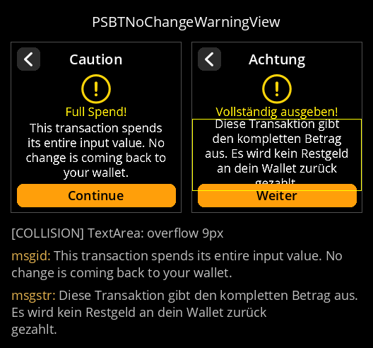
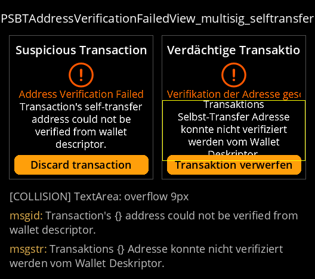
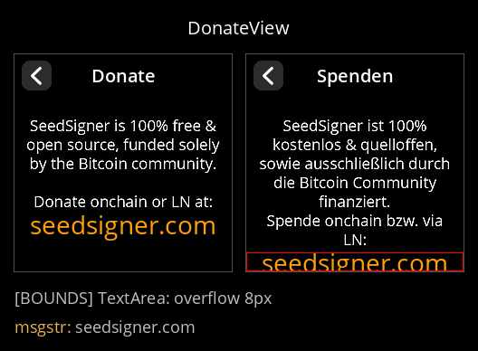
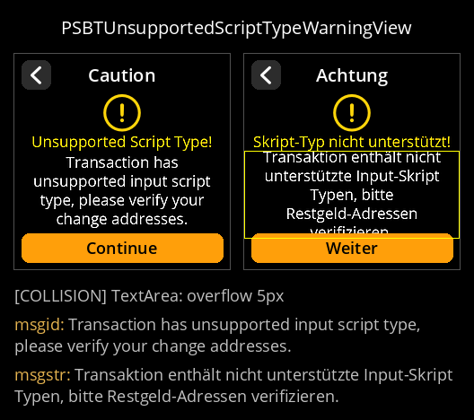
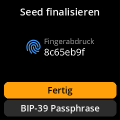
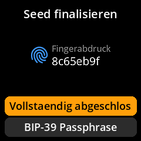
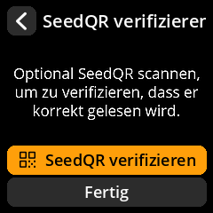
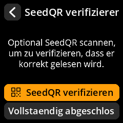
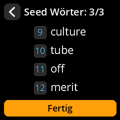
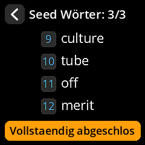

Chaitanya-Keyal/seedsigner-translations · base dev · head 8eed8f40b5 · generated 2026-07-22T11:32:30Z
PASS: no placeholder issues (locales checked: de).
4 flagged component(s). Overflow is a visual judgment call and has known false positives (untranslated literals, screens that already overflow in English).

Diese Transaktion gibt den kompletten Betrag aus. Es wird kein Restgeld an dein Wallet zurück gezahlt.
Transaktions {} Adresse konnte nicht verifiziert werden vom Wallet Deskriptor.
seedsigner.com
Transaktion enthält nicht unterstützte Input-Skript Typen, bitte Restgeld-Adressen verifizieren.4 changed, 0 added, 0 removed (out of 284 rendered).






Static review page generated by the l10n automation; images only, no scripts.